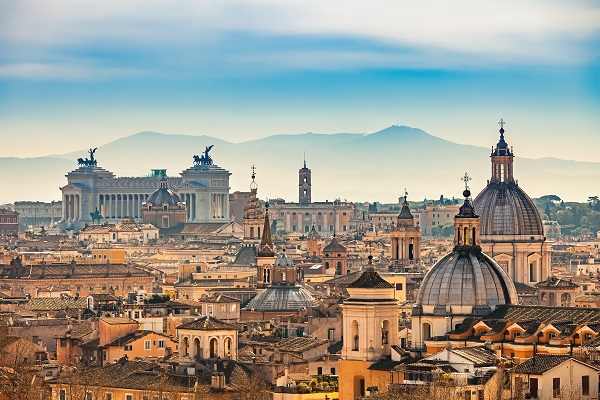
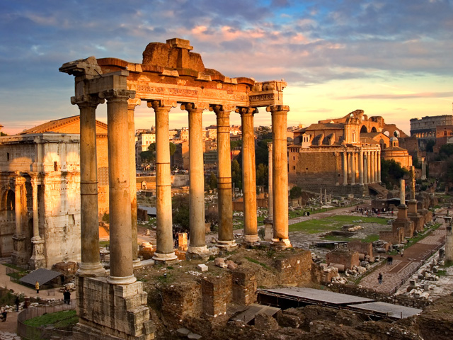
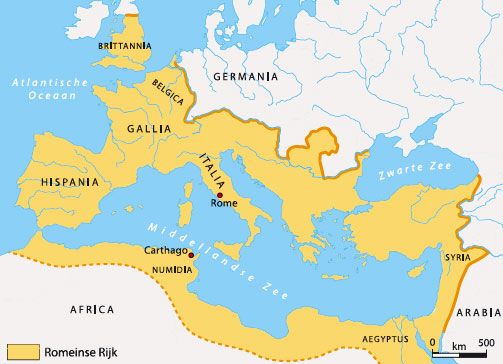

Rome is een wereldstad, de huidige hoofdstad van Italië en de hoofdstad van het Romeinse Rijk. Rome was een enorme stad, zo had Rome in de keizertijd meer dan een miljoen inwoners, Rome was het centrum van de wereld. De Romeinen namen de kennis en cultuur en architectuur over van de Grieken en Etrusken en ze verbeterden dit vaak. Zo brachten de Romeinen water naar Rome doormiddel van aquaducten. Daarnaast vonden de Romeinen hygiene erg belangrijk, daarom bouwden ze badhuizen en zorgden ze ervoor dat er schoon water naar Rome werd gebracht. Dit zorgde er mede voor dat Rome zo'n grote stad kon worden.
Er zijn vandaag nog veel gebouwen in Rome te zien die in de Romeinse tijd gebouwd waren. Veel toeristen bezoeken Dez oude gebouwen, zoals het Forum Romanum en het Colloseum. Omdat Rome de hoofdstad van het Romeine Rijk was, werden er ook veel tempels, fora, basilica en andere gebouwen gebouwd. Rome was immers de economische en culturele hoofdstad van het Romeinse Rijk, dus er waren veel verscillende soorten gebouwen
Dat Rome de hoofdstad is van het Romeinse Rijk heeft ook te maken met de ligging. Rome ligt namelijk vlak bij de Middelandse Zee, die toegang biedt tot heel Zuid-Europa en Noord-Afrika. Dit was heel belangrijk voor de handel, omdat goederen makkelijk over zee vervoerd konden worden. Daarnaast was de hoofdstad Rome relatief centraal gelegen in het Romeinse Rijk, dit was ook belangrijk voor het besturen van het grote Romeinse Rijk.